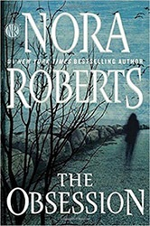
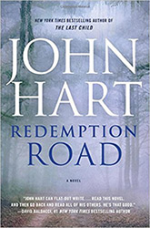

If you love to read, one thing is for certain: if you only shop the "bestseller" lists, you're going to miss many of the best stories. That's why we work hard to bring you the latest well-written stories that make you feel you're part of the story. Books that are truly worth reading.
Book Of The Month - June
Naomi Bowes lost her innocence the night she followed her father into the woods. In freeing the girl trapped in the root cellar, Naomi revealed the horrible extent of her father's crimes and made him infamous.
Now a successful photographer living under the name Naomi Carson, she has found a place that calls to her, thousands of miles away from everything she's ever known. Read more
Book Of The Month - May
A boy with a gun waits for the man who killed his mother.
A troubled detective confronts her past in the aftermath of a brutal shooting.
After thirteen years in prison, a good cop walks free as deep in the forest, on the altar of an abandoned church, a body cools in pale linen. Read more